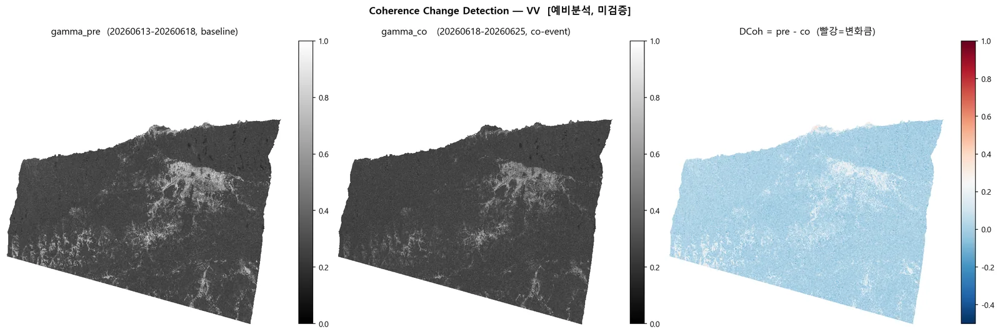
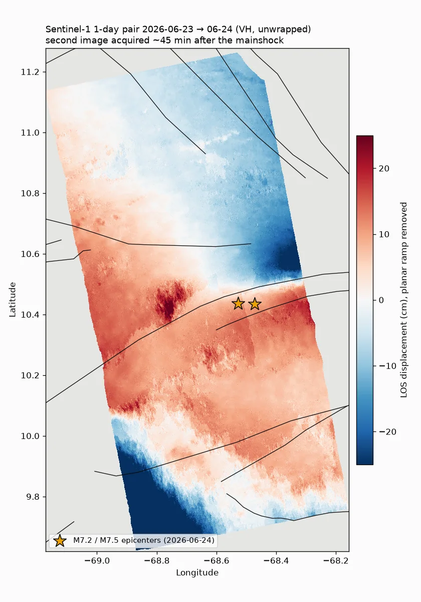
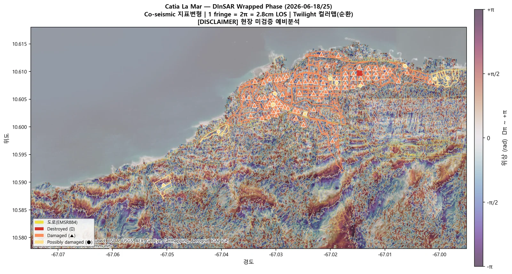
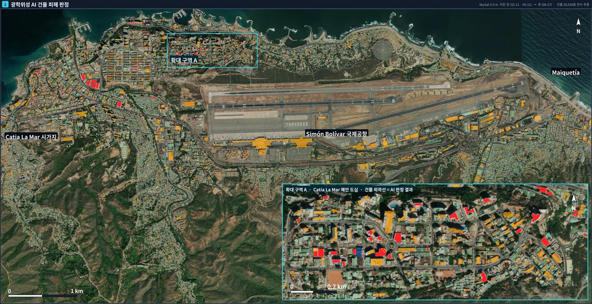
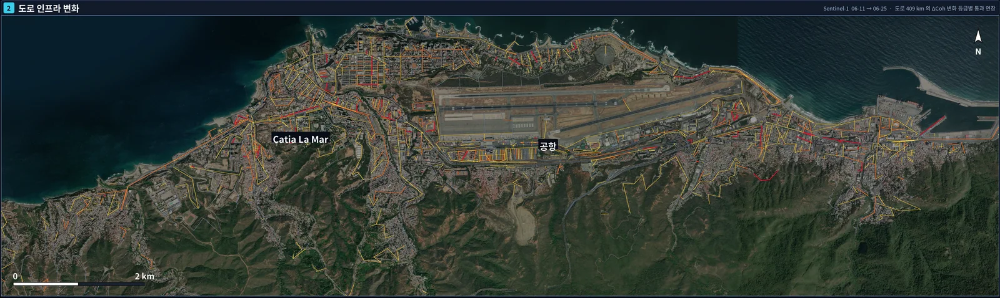
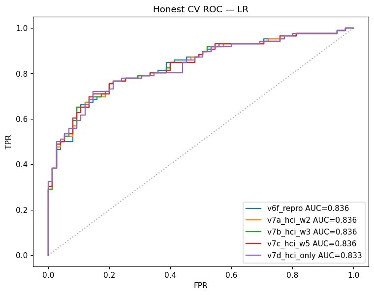
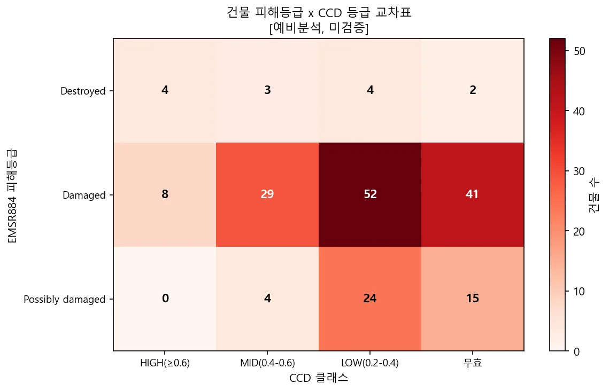
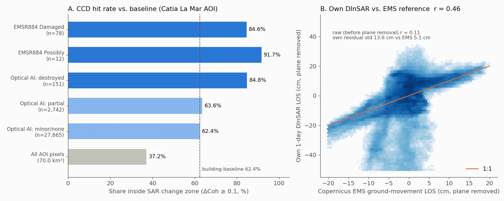

지진 피해 SAR 분석 — 2026 베네수엘라 M7.5 (CCD·DInSAR)SAR Earthquake Damage Assessment — 2026 Venezuela M7.5 (CCD & DInSAR)
2026-06-24 베네수엘라 M7.5 지진 직후 Sentinel-1 SLC로 코히런스 변화탐지(CCD)와 차분간섭(DInSAR)을 수행해 해안 도심(Catia La Mar)의 피해 의심구역·도로 노출을 등급화함. Copernicus EMS 피해판독(EMSR884)과 광학 AI 건물분류로 교차검증했고, 재계산으로 수치를 다시 확인하면서 기준선 대비 효과가 보고서보다 작다는 점과 DInSAR 절대 변위의 한계를 함께 기록함.Right after the 24 June 2026 M7.5 Venezuela earthquake, Sentinel-1 SLC pairs were used for coherence change detection (CCD) and differential InSAR to grade suspected damage zones and road exposure in the coastal city of Catia La Mar. Results were cross-checked against Copernicus EMS damage grading (EMSR884) and an optical AI building classifier; a later re-computation confirmed the numbers but showed the lift over baseline is smaller than first reported and that absolute DInSAR displacement is not reliable.
배경 · 목표Background
- 2026-06-24 22:05 UTC 본진 M7.5(깊이 10 km, 우수향 주향이동), 22:04 전진 M7.2. 카라카스 관문인 La Guaira 해안 도심과 국제공항 일대에서 건물 피해 보고.
- 재난 직후 광학 영상은 구름·촬영 일정 제약이 있어, 날씨와 무관한 C-band SAR로 피해 의심구역을 빠르게 선별하는 절차가 필요함.
- 국내 대형 손해보험사 대상 재난 피해 분석 시나리오의 지진 파트로 수행.
- Mainshock M7.5 at 22:05 UTC on 24 June 2026 (10 km deep, right-lateral strike-slip), preceded by an M7.2 foreshock. Building damage was reported around La Guaira, the coastal gateway to Caracas, and its international airport.
- Post-event optical imagery is limited by clouds and tasking, so a weather-independent C-band SAR workflow was needed to screen suspected damage zones quickly.
- Carried out as the earthquake module of a disaster-impact scenario for a major Korean P&C insurer.
방법Method
- 입력: Sentinel-1A/1C/1D IW SLC 7장(51 GB), 두 통과궤도(left: 진앙 포함, right: 해안 도심).
- DInSAR: SNAP 처리 체인(TOPSAR Split → 궤도 → Back-Geocoding → 간섭도 → Deburst → Goldstein → TC) 후 SNAPHU 2.0.4(DEFO 비용, MCF 초기화, 10×10 타일)로 언랩, d_LOS = −φλ/4π (λ = 5.55 cm).
- 1일 페어(06-23 S1A → 06-24 S1C): 두 번째 영상이 본진 약 45분 뒤에 촬영돼 지진 직후 상태를 담음.
- CCD: ΔCoh = γ_pre − γ_co (right: 06-13→06-18 vs 06-18→06-25). γ_pre 저코히런스(수면·식생) 마스크, ΔCoh<0(코히런스 상승)은 피해 신호에서 제외.
- 등급: 초기 3등급(0.2/0.4/0.6) → EMS 피해건물 탐지율을 보며 2등급(RISK 0.1~0.4, HIGH ≥0.4)으로 재설정.
- GIS 교차: EMSR884 피해건물(Destroyed/Damaged/Possibly), OSM 건물 30,558동·도로 2,243구간, GEM 활성단층과 중첩. 광학 SkySat 0.5 m 기반 건물 피해 분류기(LR+GB, v7) 결과와도 비교.
- Inputs: seven Sentinel-1A/1C/1D IW SLC scenes (51 GB) from two passes (left: covering the epicentre; right: the coastal city).
- DInSAR: SNAP chain (TOPSAR split → orbit → back-geocoding → interferogram → deburst → Goldstein → terrain correction), unwrapped with SNAPHU 2.0.4 (DEFO cost, MCF init, 10×10 tiles); d_LOS = −φλ/4π (λ = 5.55 cm).
- 1-day pair (S1A 23 June → S1C 24 June): the second image was acquired about 45 minutes after the mainshock.
- CCD: ΔCoh = γ_pre − γ_co (right pass: 13→18 June vs 18→25 June), masking low pre-event coherence (water, vegetation) and discarding ΔCoh < 0 (coherence gain).
- Grading: an initial three-class scheme (0.2/0.4/0.6) was later reset to two classes (RISK 0.1–0.4, HIGH ≥ 0.4) by checking hit rates on EMS-labelled buildings.
- GIS overlay with EMSR884 damage points/polygons, 30,558 OSM buildings, 2,243 road segments and GEM active faults; compared with an optical (SkySat 0.5 m) building-damage classifier (LR + GB, v7).
결과Results
- 해안 도심 AOI(70 km²): ΔCoh ≥ 0.1 위험구역 26.0 km²(37.2%), 고위험(≥0.4) 3.6 km²(5.2%). 장면 전체 MID+HIGH 70.8 km².
- EMSR884 Damaged 건물 76동 중 65동(85.5%)이 위험구역 내 — 단, 같은 구역의 일반 건물도 62.4%가 위험구역에 걸려 기준선 대비 약 1.36배.
- 피해등급이 높을수록 고변화(≥0.4) 비율이 높음: Destroyed 7/13 > Damaged 37/130 > Possibly 4/43 (장면 전체).
- 광학 AI: 30,558동 중 완전파괴 151 / 부분 2,742 / 경미·없음 27,665. 교차검증 CV AUC 0.836. 완전파괴 151동 중 128동(84.8%)이 SAR 위험구역과 겹침.
- DInSAR 1일 페어: 평면 램프 제거 후 Copernicus EMS 지반변위 제품과 r = 0.46 (원값 r = 0.11). 진앙 북쪽에 동서 방향 위상 불연속이 보이나 언랩 오류와 구분하지 못함.
- 도로: 지도 레이어 재계산 기준 389 km 중 변화 감지 구간 159 km(41%), 중·고변화 57 km(14.6%).
- Coastal AOI (70 km²): RISK zone (ΔCoh ≥ 0.1) 26.0 km² (37.2%), HIGH (≥ 0.4) 3.6 km² (5.2%); 70.8 km² MID+HIGH over the whole scene.
- 65 of 76 EMSR884 'Damaged' buildings (85.5%) fall in the RISK zone — but 62.4% of ordinary buildings in the same area do too, so the lift over baseline is only about 1.36×.
- The share in HIGH change rises with damage grade: Destroyed 7/13 > Damaged 37/130 > Possibly 4/43 (whole scene).
- Optical AI: of 30,558 buildings, 151 destroyed / 2,742 partially damaged / 27,665 minor or none; cross-validated AUC 0.836; 128 of the 151 destroyed (84.8%) overlap the SAR RISK zone.
- 1-day DInSAR vs Copernicus EMS ground-movement product: r = 0.46 after removing a planar ramp (raw r = 0.11). An E–W phase discontinuity north of the epicentre is visible but could not be separated from unwrapping errors.
- Roads (recomputed from the map layer): 159 km of 389 km (41%) show change, 57 km (14.6%) moderate-to-high.









배운 점 · 한계What I learned · Limitations
- CCD 적중률은 기준선과 같이 봐야 한다: EMS 피해건물 84.6% vs 일반 건물 62.4%. 도심은 원래 코히런스 손실이 커서 '85% 탐지'만으로는 효과를 말할 수 없음.
- 임계치 0.1을 EMS 라벨로 역산한 뒤 같은 라벨로 검증했다 — 독립 검증이 아니라는 점을 보고서에 쓰지 못함.
- 광학 AI 완전파괴 151동에는 학습 양성 86동이 전부 포함(GB in-sample AUC 1.000) — 독립 예측은 65동. 학습 코드가 원 작업 PC에만 남아 재생성은 불가, 학습셋 구성과 CV AUC(0.833)만 재현.
- DInSAR 절대값은 신뢰 불가: right 장면 변위가 −255~+114 cm로 물리적으로 맞지 않고(진앙 160 km 밖), 1일 페어도 약 1 m 램프. 감긴 위상 무늬가 지형을 따라가 지형 잔차·대기 영향 가능성. 해결하지 못함.
- 면적 환산에 14×14 m 화소를 가정해 약 2% 과대(실제 13.8×13.9 m). 도로 총연장 409 km vs 지오메트리 389 km, 위험구역 도로 236 km vs 159 km 불일치 — 원인 미확인.
- 시간기선 5일(γ_pre) vs 7일(γ_co)로 맞추지 못한 페어가 있어 시간 탈상관이 섞일 수 있음.
- CCD hit rates must be read against a baseline: 84.6% of EMS-damaged buildings vs 62.4% of ordinary buildings. Urban areas lose coherence anyway, so '85% detected' alone says little.
- The 0.1 threshold was tuned on EMS labels and then validated on the same labels — not an independent test, which the original report did not state.
- All 86 training positives ended up in the optical 'destroyed' class (GB in-sample AUC 1.000), so only 65 of the 151 are independent predictions. The training code stayed on the original workstation; only the training-set composition and CV AUC (0.833) could be reproduced.
- Absolute DInSAR values are not reliable: the right-pass displacement spans −255 to +114 cm (implausible 160 km from the epicentre) and the 1-day pair carries a ~1 m ramp; wrapped fringes follow topography, pointing to DEM/atmospheric residuals. Not resolved.
- Areas were computed with an assumed 14×14 m pixel, overstating by ~2% (actual 13.8×13.9 m). Road totals (409 vs 389 km) and exposed length (236 vs 159 km) disagree between report and map layer — cause not found.
- One CCD pair mixes 5-day (pre) and 7-day (co-event) baselines, so temporal decorrelation is not fully controlled.
분석 결과 문서Analysis documents
분석 당시 작성한 결과 문서를 그대로 싣음. 새 탭에서 열림.The result documents written during the analysis, published as-is. Opens in a new tab.
관련 코드Code
저장소는 센서 → 위성 → 기법 순으로 정리돼 있고, 각 폴더에 입력·출력 표가 있음.The repository is organised by sensor, satellite and technique; each folder documents its inputs and outputs.
산출물Deliverables
- CCD ΔCoh·등급 래스터(VV/VH, 두 궤도), 위험구역 GeoPackage
- DInSAR 언랩 위상·LOS 변위 GeoTIFF
- 건물·도로 × CCD 교차 GIS 레이어와 정량 보고서(MD/HTML)
- 광학+SAR+EMS 융합 HTML 리포트, 위성맵 카드뉴스(PNG/PDF/HTML)
- CCD ΔCoh and class rasters (VV/VH, two passes), risk-zone GeoPackages
- DInSAR unwrapped phase and LOS displacement GeoTIFFs
- Building/road × CCD GIS layers and quantitative reports (MD/HTML)
- Fused optical + SAR + EMS HTML report and a satellite-map briefing sheet (PNG/PDF/HTML)
원본 보고서와 발표자료는 사내 자료로 공개하지 않음. 분석 코드는 GitHub에 정리되어 있음.Source reports and decks are internal and not published here. Analysis code is organised on GitHub.